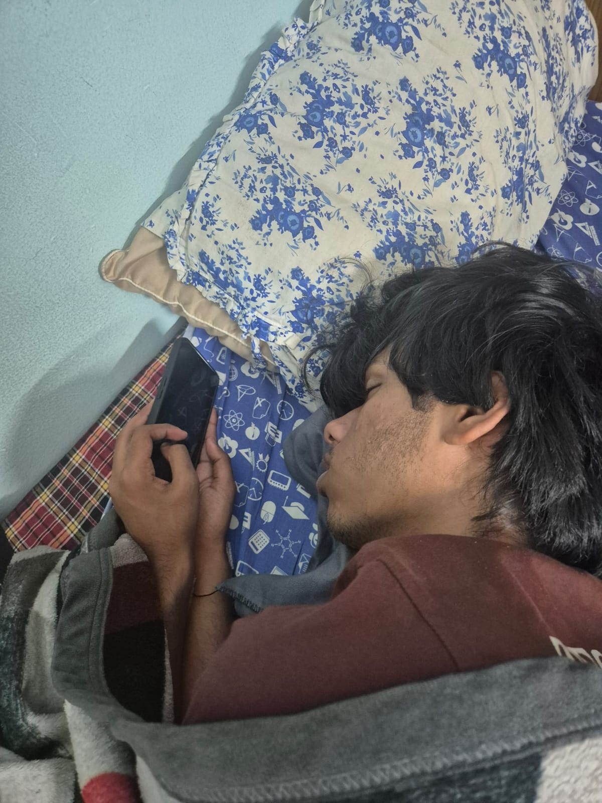
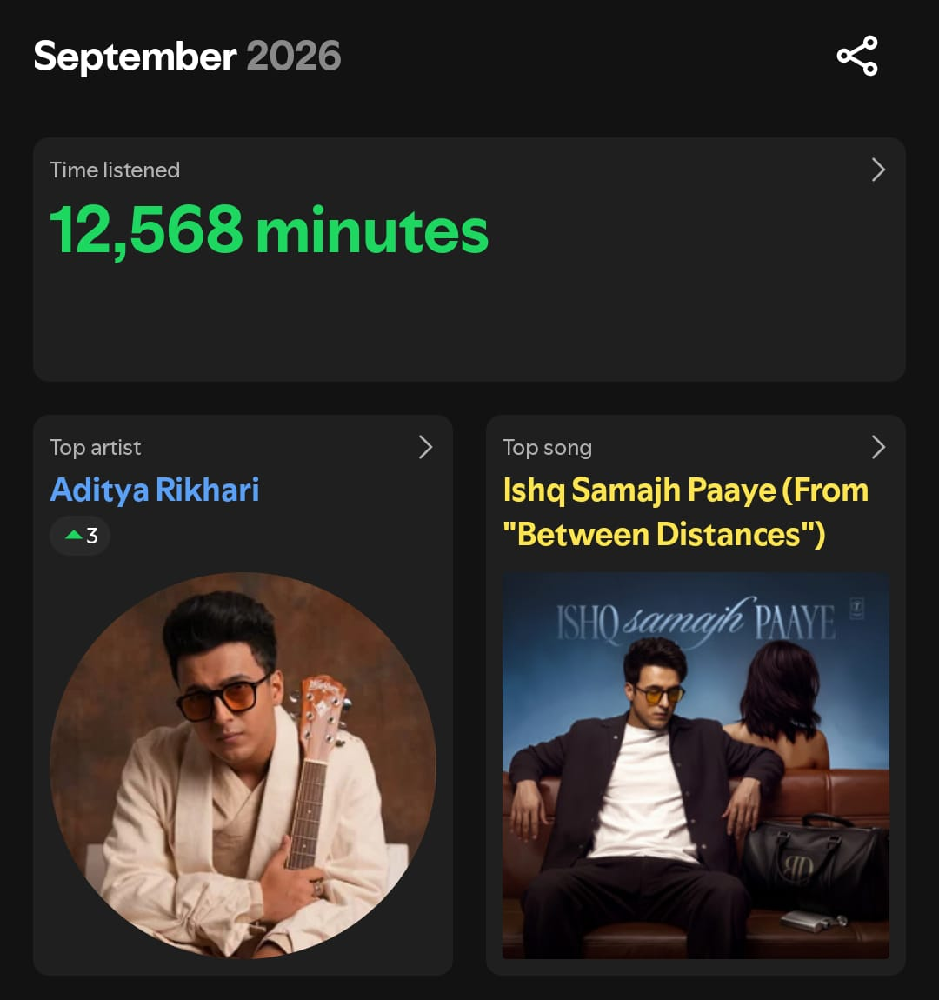
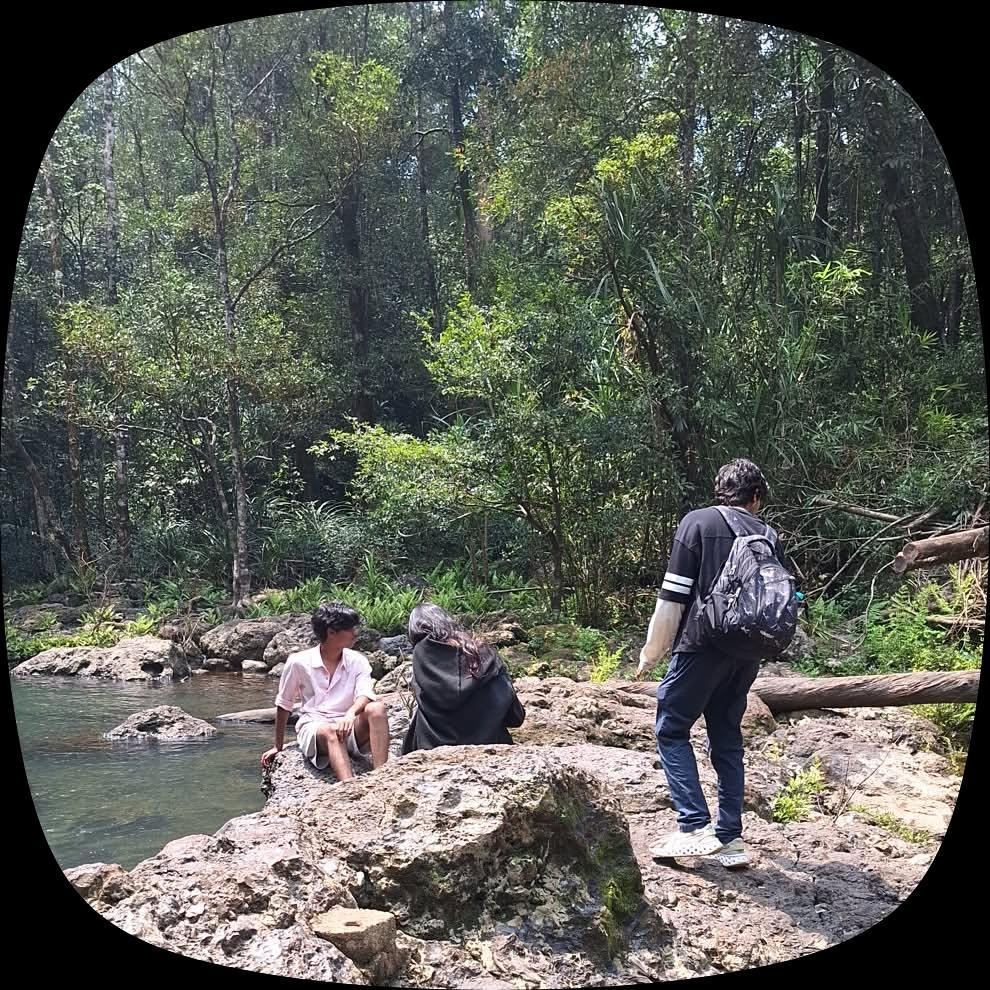

Current chapter
2024 — Present
Manipal Institute
of Technology
Bachelor of Technology
in Information Technology
Kolkata roots. Manipal chapter.
Learning the tech.
Finding my own perspective.
I'm an Information Technology student at Manipal Institute of Technology, from Kolkata. This is a little about my journey and the things I'm exploring along the way.
B.Tech · Information Technology
Manipal Institute of Technology
Kolkata, India
The person
Hi, I'm Snehal. I grew up in Kolkata and studied at St. James' School before starting my Bachelor of Technology in Information Technology at Manipal Institute of Technology in 2024.
For me, college is a chance to build a strong foundation, discover new interests, and turn learning into something practical. I'm taking it one idea, one challenge, and one experience at a time.
A little curiosity can take you a long way.
02 / The journey so far
Two cities. A continuing story.
2024 — Present
Bachelor of Technology
in Information Technology
2022 — 2024
School education
The beginning of the journey
03 / Learning by doing
A space for what I know
and what I'm learning next.
01 / Technical
Exploring the building blocks of clear, responsive webpages.
02 / Thinking
Breaking ideas into smaller pieces and working towards a solution.
03 / People
Sharing ideas, listening to others, and learning together.
04 / Beyond the classroom
Room for the things
that make life interesting.

Photography, little details, and moments worth keeping.

Good music, new discoveries, and a playlist for every mood.

Exploring new places and enjoying a change of scenery.
05 / Keep in touch
A shared idea, a new perspective, or just a conversation.
My inbox is a good place to start.